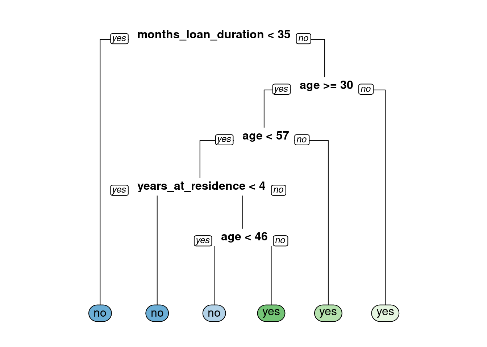

Chapter 3 Classification Trees
## ── Attaching packages ─────────────────────────────────────── tidyverse 1.3.0 ──## ✓ ggplot2 3.3.3 ✓ dplyr 1.0.5
## ✓ tibble 3.1.0 ✓ stringr 1.4.0
## ✓ tidyr 1.1.3 ✓ forcats 0.5.1
## ✓ purrr 0.3.4## ── Conflicts ────────────────────────────────────────── tidyverse_conflicts() ──
## x dplyr::filter() masks stats::filter()
## x dplyr::lag() masks stats::lag()##
## ── Column specification ────────────────────────────────────────────────────────
## cols(
## checking_balance = col_character(),
## months_loan_duration = col_double(),
## credit_history = col_character(),
## purpose = col_character(),
## amount = col_double(),
## savings_balance = col_character(),
## employment_duration = col_character(),
## percent_of_income = col_double(),
## years_at_residence = col_double(),
## age = col_double(),
## other_credit = col_character(),
## housing = col_character(),
## existing_loans_count = col_double(),
## job = col_character(),
## dependents = col_double(),
## phone = col_character(),
## default = col_character()
## )Welcome to the Course
A classification tree is a decision tree that performs a classification (vs regression) task.## Build a Classification Tree
Let’s get started and build our first classification tree.
You will train a decision tree model to understand which loan applications are at higher risk of default using a subset of the German Credit Dataset. The response variable, default, indicates whether the loan went into a default or not, which means this is a binary classification problem (there are just two classes).
You will use the rpart package to fit the decision tree and the rpart.plot package to visualize the tree.
Exercise
The data frame creditsub is in the workspace. This data frame is a subset of the original German Credit Dataset, which we will use to train our first classification tree model.
- Take a look at the data using the
str()function.
## tibble[,5] [1,000 × 5] (S3: tbl_df/tbl/data.frame)
## $ months_loan_duration: num [1:1000] 6 48 12 42 24 36 24 36 12 30 ...
## $ percent_of_income : num [1:1000] 4 2 2 2 3 2 3 2 2 4 ...
## $ years_at_residence : num [1:1000] 4 2 3 4 4 4 4 2 4 2 ...
## $ age : num [1:1000] 67 22 49 45 53 35 53 35 61 28 ...
## $ default : chr [1:1000] "no" "yes" "no" "no" ...- In R, formulas are used to model the response as a function of some set of predictors, so the formula here is
default ~ ., which means use all columns (except the response column) as predictors. Fit the classification decision tree using therpart()function from therpartpackage. In therpart()function, note that you’ll also have to provide the training data frame.
- Using the model object that you create, plot the decision tree model using the
rpart.plot()function from therpart.plotpackage.

3.1 Introduction to Classification Trees
What are some advantages of using tree-based methods over other supervised learning methods?
- Model interpretability (easy to understand why a prediction is made).
- Model performance (trees have superior performance compared to other machine learning algorithms).
- No pre-processing (e.g. normalization) of the data is required.
- 1 and 3 are true.
3.2 Prediction with a Classification Tree
Let’s use the decision tree that you trained in the first exercise. The tree predicts whether a loan applicant will default on their loan (or not).
Assume we have a loan applicant who:
is applying for a 20-month loan is requesting a loan amount that is 2% of their income is 25 years old After following the correct path down the tree for this individual’s set of data, you will end up in a “Yes” or “No” bucket (in tree terminology, we’d call this a “leaf”) which represents the predicted class. Ending up in a “Yes” leaf means that the model predicts that this individual will default on their loan, where as a “No” prediction means that they will not default on their loan.
Starting with the top node of the tree, you must evaluate a query about a particular attribute of your data point (e.g. is months_loan_duration < 44?). If the answer is yes, then you go to the left at the split; if the answer is no, then you will go right. At the next node you repeat the process until you end up in a leaf node, at which point you’ll have a predicted class for your data point.

According to the model this person will default on their loan.
3.3 Overview of the Modelling Process
Exercise
For this exercise, you’ll randomly split the German Credit Dataset into two pieces: a training set (80%) called credit_train and a test set (20%) that we will call credit_test. We’ll use these two sets throughout the chapter. The credit data frame is loaded into the workspace.
- Define
n, the number of rows in thecreditdata frame.
- Define
n_trainto be ~80% ofn.
- Set a seed (for reproducibility) and then sample
n_trainrows to define the set of training set indices.
# Create a vector of indices which is an 80% random sample
set.seed(123)
train_indices <- sample(1:n, n_train)- Using row indices, subset the credit data frame to create two new datasets:
credit_trainandcredit_test
# Subset the credit data frame to training indices only
credit_train <- credit[train_indices, ]
# Exclude the training indices to create the test set
credit_test <- credit[-train_indices, ]